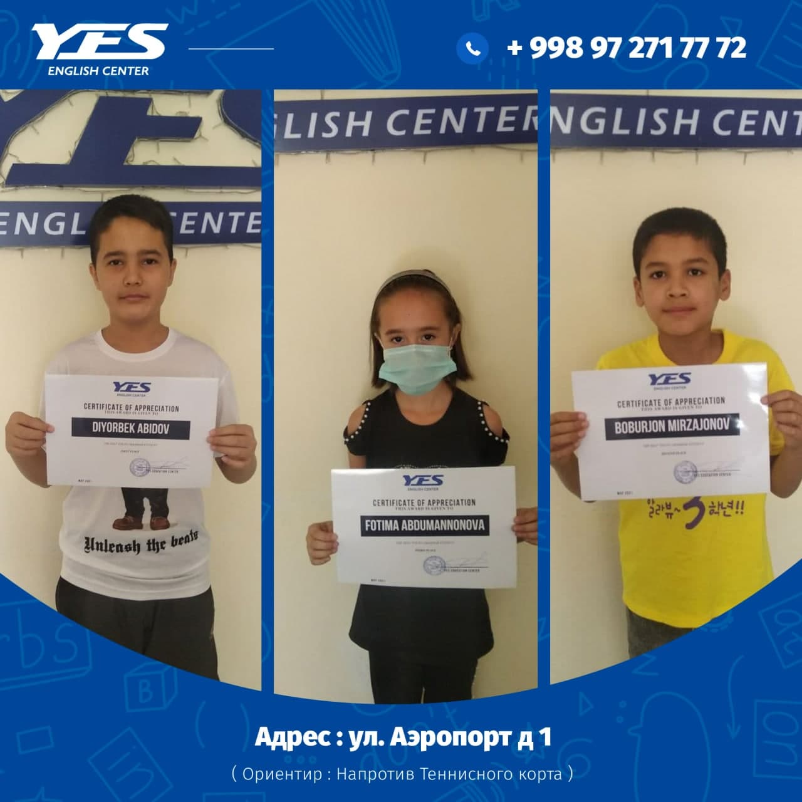

Please meet our best students in May‼️
The first nomination is THE BEST YOUNG GRAMMAR STUDENT👶🏻 and the winners are:
DIYORBEK ABIDOV - 🥇
BOBURJON MIRZAJONOV - 🥈
FOTIMA ABDUMANNONOVA - 🥉
Congratulations! 🏆
Представляем вашему вниманию наших лучших учеников в мае‼️
Первая номинация - ЛУЧШИЙ ЮНЫЙ УЧЕНИК ПО ГРАММАТИКЕ 👶🏻 и наши победители:
ДИЕРБЕК АБИДОВ - 🥇
БОБУРЖОН МИРЗАЖОНОВ - -🥈
ФОТИМА АБДУМАННОНОВА - 🥉
Поздравляем! 🏆
#winners #competition